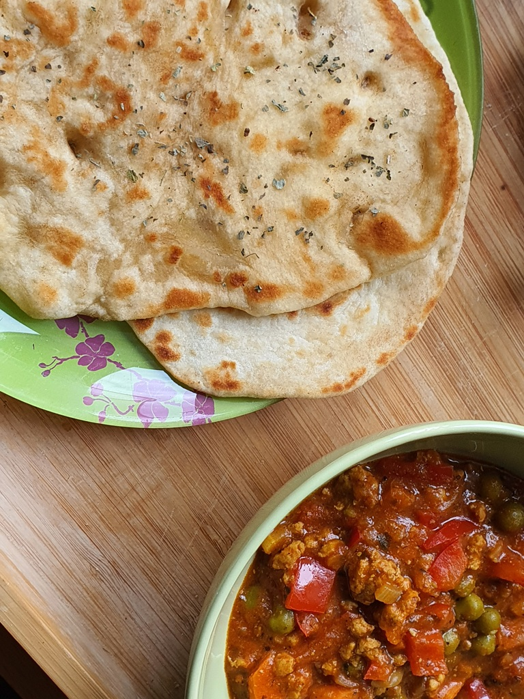

Skład:
- mąka 500g;
- 0,5 szklanki letniej wody;
- 0,5 szklanki jogurtu naturalnego (np. grecki);
- 1 płaska łyżka soli;
- 2 łyżki oleju bądź miękkiego masła;
- pół łyżeczki curku;
- łyżeczka suchych drożdży (opcjonalne wg przepisu);
Przygotowanie:
Wszystkie składniki wymieszać i wyrobić z nich jednolite ciasto. Rozwałkować na placki o grubości 1-2mm. Smażyć na patelni bądź w bardzo rozgrzanym piekarniku na kamieniu do pizzy.
Zdjęcia:
